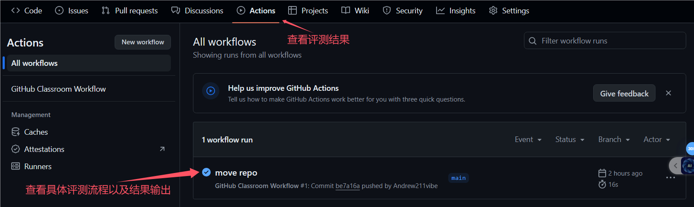
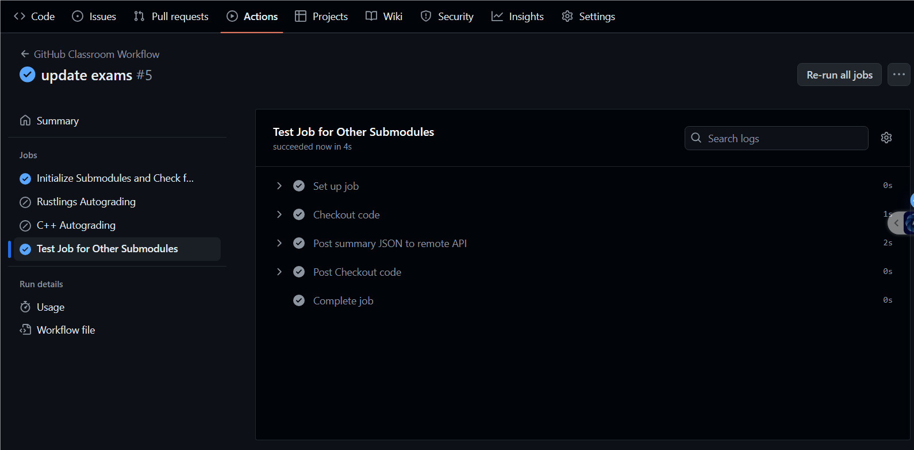

前言
本文档旨在为读者提供一个关于操作系统深入理解的指南，并在导学阶段提供必要的知识清单。但注意，相较于一个纯粹的教程，你更应该把本文档看作一个知识清单。
本书大纲
- 第一章：详细介绍基础阶段的一些基本信息和教学系统的使用方式。
- 第二章：包含对
exam-grading的使用的介绍，它是我们测试的核心工具。同时，再次介绍了 CI 的常见问题。 - 第三章：讲解了一下测试与评分的流程，并且为 C++ 题目进行了一定的解释。
- 附录 A：汇总了可供参考的各种资料，为读者提供了进一步学习和研究的方向。
读者的任务
根据第一章，确保自己的用户个人信息与 Github 关联好后，根据第二章，确保自己能够成功运行exam-grading，并且能够正确地使用它。最后按照第三章中的流程概述，完成对应任务。
反馈与贡献
如果您有任何意见、建议或疑问，欢迎随时通过 GitHub 上的 Issues 页面进行反馈。
介绍
InfiniTensor：人工智能编译器与大模型系统训练营
InfiniTensor：人工智能编译器与大模型系统训练营由清华大学发起，面向开源社区和高校，普及人工智能各方面知识和技术，培养相关人才。训练营全程免费，通过课程、习题和项目实践，在人工智能飞速发展的背景下，为学员提供一窥深层技术的机会。
文档概述
本文档基于导学阶段的课程内容，为您提供一份较为简单易用的学习指南。但请注意，您可以将本文档看作您在 人工智能编译器与大模型系统训练营基础阶段 的一份知识地图，而不是一份完整详细的教程。我们会简要介绍所需要的知识点，但不会过于详细深入。如果有兴趣，可以自行去深入了解对应方向。
第一章：基础阶段基本信息
本章概述
本章主要介绍训练营基础阶段的基本信息，包括教学系统使用引导、导学阶段视频课程链接与学习引导、训练营教学安排以及教学系统常见问题与解决方案。
通过对本章内容的阅读，同学们能够了解怎么使用训练营的教学系统，并大致了解评分规则。
注：请格外关注个人信息填写部分
本章目录
训练营教学系统使用引导
训练营教学系统导学阶段链接
InfiniTensor：人工智能编译器与大模型系统训练营导学阶段
本节目录
个人信息管理

如图所示，通过右上角显示的昵称，选择个人中心，进入个人信息管理。

通过这里的编辑个人信息可以对自己的信息进行补充和修改。
注：为了确保实验成绩在排行榜上正确显示，请确保正确填写了 GitHubName/GiteeName。
如何听课

-
首先，你需要进行课程签到，如未完成签到，签到按钮会显示于红圈内“已签到”位置。
-
完成签到后可在上课时间点击“进入教室”听课，课程回放会在直播课程结束后于“学习视频”页面上架。
教室使用

进入教室时需要确保给与当前页面足够的权限。
如有需要可通过左下角聊天框向老师提问。
如发现电脑端听课不便，可通过右上角“手机听课”在手机端听课。
注：请优先使用 Chrome 浏览器听课。
成绩查看

实验的最终成绩会显示在晋级榜单页面，此处会显示排名、姓名（授课系统昵称）、学校（如在个人信息内填写）、分数与其他信息。
排行榜上显示的成绩将会作为个人晋级的依据。
组队与组队奖励

训练营允许且鼓励学员组队学习，组队的操作位于“组队信息页面”。关于组队的操作说明如下：
- 只有队长可以创建/解散队伍，其余队员只可加入退出。
- 包含队长在内，不少于两人的队伍为有效组队，不允许“单人成队”。
- 训练营为全员晋级的队伍的队长发放奖品作为鼓励。
- 组队情况不影响单人晋级。
基础阶段视频课程链接与学习引导
待上课完毕后，将会在本部分罗列出课程回放视频。
训练营教学安排
Rust 课程安排
Cpp 课程安排
教学系统常见问题与解决方案
在使用教学系统进行学习或参与活动时，可能会遇到各种技术问题。以下是一些常见问题的解决方案，帮助你顺利完成学习任务和活动参与。
本节目录
1.PC 端教室画面显示异常

如果在使用 Edge 浏览器时遇到教室画面显示不全的问题，可以尝试切换到 Chrome 浏览器。Chrome 浏览器通常对网页的兼容性更好，可以有效避免显示问题。
建议在 PC 端使用 Chrome 浏览器听课，以防止出现类似问题。
2.组队页面无法自己组建队伍
如果你发现自己无法在组队页面创建新的队伍，首先检查你是否已经加入或创建了另一支队伍。每个阶段通常限制每人只能参与一支队伍。如果已加入或创建了队伍，你需要先退出或解散当前队伍，然后才能创建新的队伍。
如果确认没有加入或创建其他队伍，但仍然无法创建新队伍，请确保你已经登录到教学系统。如果登录后问题依旧，建议联系系统管理员寻求帮助。
3.进入教室后发现没有声音
如果在进入教室后发现没有声音，首先检查你是否已经给予教室页面所需的权限，如麦克风和扬声器的访问权限。同时，检查你的本地设备设置，确保扬声器或耳机已正确连接并开启。
如果声音较小，可以在聊天区向授课老师提出，请求调整音量。
4.晋级榜单上的成绩没有准确链接到用户信息
为了确保你的成绩能够正确链接到你的用户信息，你需要在个人信息页面中正确填写你的 GitHubName 或 GiteeName。这些信息是用来识别你的身份并关联你的成绩的。
填写完毕后，重新提交你的代码。这通常可以刷新成绩和用户信息的链接，确保你的成绩正确显示在排行榜上。
第二章：评分系统的使用
本章概述
在导学阶段，有部分同学们，已经接触了此评分系统，但也存在部分同学还没有接触过，因此本章将详细介绍如何使用评分系统，完成构建自己的评测系统用于后续阶段的测验提交，并熟悉评测系统的使用。如果你曾经使用过评分系统，可以跳过本章。
本章的主要内容为，向学员们介绍Exam Grading 自动测试评分系统的使用，完成构建自己的评测系统用于后续阶段的测验提交，并熟悉评测系统的使用。
在第一节，我们介绍了如何本地部署评分测试系统。
在第二节，我们介绍了如何实际使用评分系统进行测试，最后的结果是，能够在导学阶段排行榜上，看到你的名字。
第三四节，主要是这部分常用的知识点，根据往届经验来看，较易出现问题，建议多看看。
注：运行过程中产生的问题请查阅Q & A，实在解决不了，再在微信群聊中咨询助教和老师！
本章目录
下载环境
注：运行过程中产生的问题请查阅Q & A，实在解决不了，再在微信群聊中咨询助教和老师！
本节目录
准备 Git 环境
Git 的安装可参考：1.5 起步 - 安装 Git 或 本书第一章第一节
获取 exam-grading 源码
学员需要通过 exam-grading 模板 创建自己的评分系统仓库：

NOTICE 推荐创建为 private 仓库，自己部分的仓库名可以随便起，如下图：

之后将创建的 exam-grading 仓库拉取到本地
git clone '打马赛克的那一堆的实际网址' ./exam-grading
cd exam-grading
NOTICE 仓库网址打马赛克了，请自行替换，如果不会这么看或者不会拉取，那就复习导学阶段指导书的第三章第二节的对应内容。
实际操作
该部分将通过给评分系统添加 exams 目录以演示测验评分系统的使用方法。
注：运行过程中产生的问题请查阅Q & A，实在解决不了，再在微信群聊中咨询助教和老师！
注：推荐使用“子模块”方式，使用此系统。
首先需要在 Github 上创建一个测试仓库（只需包含一个 README 即可），权限设置为 public，否则之后测试拉取会因为没有权限而报错找不到仓库。创建好测试仓库之后可通过两种方式添加将该测试仓库添加至评分系统：直接目录和子模块。
本节目录
通过 "直接目录" 使用此系统
通过直接目录的方式添加测试目录，需要学员将目标测试目录克隆到评分系统中：
# 首先进入到exam-grading的项目目录内
cd exam-grading
git clone <target-test-repo> ./exams
cd exams
# 确保为最新
git pull
通过 "子模块" 使用此系统
子模块方式则只需将对应测试目录以子模块的方式加入评分系统即可：
# 首先进入到exam-grading的项目目录内
cd exam-grading
# 下面尖括号内的内容，替换为你刚刚新建的那个远程仓库的地址
# 第二个参数，请写死为“exams”！如果没有，那么测试不会运行！
git submodule add <target-test-repo> ./exams
# 确保为最新
git submodule update --remote
# 然后 git add
git add .
预期结果如下图，通过 git status 查看：

添加测试目录后，学员即可提交更改到远程仓库，评测系统将会自动运行。
通过以下命令提交：
# add 那步刚刚做完了！
git commit -m "你想提交的信息，一般来说，要符合你所做的实际更改内容，比如增加了什么，完成了什么"
git push
运行结果可以在仓库 actions 界面查看：

NOTICE 此处提交的内容为新增的
exams目录，若使用子模块方式还会有一个.gitsubmodule文件，如果你放置的，是其它名字的目录，那么对应的远程仓库的产物名字也是你改的那个名字。
注：待测试仓库，请写死为“exams”！如果没有，那么测试不会运行！
目标运行结果：

成功标志
在训练营导学阶段的排行榜中，看到你的名字(如果看不到，可能是你没改个人信息，或者 Actions 运行出错，如果是后者，请去群里联系班主任或助教)。
链接：https://opencamp.cn/InfiniTensor/camp/2024summer/stage/0?tab=rank
注：在评分一样的情况下，按照时间排序，请自行寻找自己的位置。同时，记得要在你 push 后，等 5 到 10min！
GitHub Actions 常见问题与解决方案
这部分在导学阶段，可能不太会涉及到，但在后续阶段，可能会很常见！故，推荐同学们在这里先浏览一遍。
在使用 GitHub Actions (在 Gitee 里称为 Gitee Go ，中文译作流水线) 进行代码托管和自动化测试时，可能会遇到各种问题，如工作流不执行、时间耗尽、运行时间过长等。以下是针对这些常见问题的详细解决方案，请重点查看“运行时间过长怎么办”这一部分！
本节目录
1. 在启用 GitHub Actions 并向仓库 push 代码后工作流不执行
- 检查 Actions 时间：首先确认你的仓库 Actions 时间是否已经耗尽。如果时间耗尽，工作流将不会执行。
- 手动触发工作流：如果 Actions 时间未耗尽，尝试在 Actions 页面手动触发新的工作流。使用仓库中的工作流配置文件，配置文件通常位于
.github/workflows/main.yml。 - 修改配置文件：如果手动触发工作流后问题依旧，尝试修改配置文件中的作业名称或步骤名称，然后重新提交。
- 重新
fork仓库：如果上述步骤都无法解决问题，尝试重新 fork 仓库，然后再次推送代码。 - 手动创建新仓库：如果重新
fork仓库后问题仍未解决，可以尝试根据当前仓库内容手动创建一个新仓库，但不进行fork操作，直接把工作流的代码和你完成后的代码copy到新仓库里。
2. 在启用 GitHub Actions 时不小心创建了默认工作流
- 删除默认工作流：默认工作流的运行不会影响自定义工作流的运行，但会消耗时间。你可以在 Actions 页面手动删除默认工作流。自定义工作流的默认名称可能为“ci”或“cd”。
3. 仓库 GitHub Actions 时间耗尽怎么办
- 再
fork一个仓库：如果仓库的 Actions 时间耗尽，最简单的解决方案是再fork一个仓库，然后继续使用。
4.工作流运行时间过长怎么办
- 手动取消运行：如果工作流运行时间过长，可以手动取消运行。然后查看工作流日志，确定导致运行时间过长的原因。理论上，单次工作流运行时间不应超过 20 分钟。
- 换个人少的时间段：如果工作流运行时间过长，可以尝试在其它时间段运行，例如工作日的上午或下午。一定尽量避免在晚上、凌晨或者周末运行，按照规律来看，这些时间非常容易出现工作流运行时间过长的问题。
根据其它训练营的情况来看，工作流运行时间过长的原因很可能是因为某段时间内，使用相同父仓库 clone 下来的工作流代码，被多个用户同时运行，导致 Github 后端预留的服务器数量等资源产生严重竞争，导致类似死锁或饥饿的情况发生，反映到前端就是，工作流运行时间极长，但仍旧没有结果。
5. 工作流日志无法生成
- 尝试其他设备或浏览器：如果工作流日志无法生成，尝试使用手机或其他浏览器查看。有时候，问题可能是由于浏览器兼容性或缓存问题导致的。
第三章：习题简介
本章概述
对于专业阶段中的部分内容，需要具有一定的 C++编程基础。但有些同学对 C++不够熟悉，或者有些同学读不懂 C++的题目要求，因此本章将介绍一下，C++习题的要求和涉及到的知识点。
对于 Rust 来说，相当一部分同学是没有 Rust 基础的。因此，我们使用 Rustlings 作为考核内容。它的内容与 Rust 的官方学习文档https://doc.rust-lang.org/book/ 的内容重合度较高，并且较为基础、简单。所以，本章不再对 Rust 学习内容进行详细介绍。有兴趣的同学可以自行学习。
希望学员们通过本章内容的学习，能够选择自己擅长的编程语言进行学习，从而为更好地掌握专业阶段的内容打下基础。
注：不会详细介绍对应知识点的内容，如果想要详细学习，自行收集资料/询问 AI/官方文档才是最好的方法。
本章目录
提交全过程概述
注：本部分默认你已经在导学阶段，掌握了 Git 的大致使用方式。如果没有，请自行学习。
本节目录
大体说明
大体步骤类似导学阶段内的测试，你需要将自己的测试题集，放到 Github 上，将权限设置为 public，然后使用子模块/目录的方式，添加到 exam-grading 内。
更新至最新的 exam-grading
由于 exam-grading 会不定期更新，所以，在实际操作前要同步你之前用该模板创建的仓库。
最简单的方式就是重新根据最新的 exam-grading 建一个，流程见本书第二章。
Rust 流程
- 参照
rustlings官方的测试题集进行使用，然后将此仓库放置到github远程仓库内，且设置为public。 - 本地做题后，
push到自己create的仓库。 - 将该远程仓库，添加为
exam-grading的子模块，必须命名为rustlings。 - 将
exam-gradingpush到自己的评分系统仓库。
Cpp 流程
fork后，用git pull拉取C++的测试题集- 本地做题后，
push到自己fork的仓库 - 将该仓库，添加为
exam-grading的子模块，必须命名为learning-cxx - 将
exam-gradingpush到自己的评分系统仓库。
后续，会对 C++ 题目进行简要介绍。
注：切记先 Fork ！
C++: 0 到 15
注：应老师要求：本部分暂时不能放出，在课程大致进行完毕后，才会放出！
本节目录
C++：16 到 29
注：应老师要求：本部分暂时不能放出，在课程大致进行完毕后，才会放出！
Q & A
暂无
附录 A：可供参考的资料
暂未完成